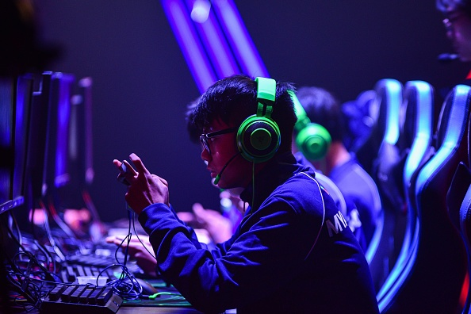

Te ofrecemos lo mejor

EZ Gaming te ofrece el mejor recurso de entrenadores experimentados de Challenger. Si estás buscando alcanzar tu rango objetivo en el juego, o simplemente comprender cada mecanica de el, el método más satisfactorio y rápido es aprender de sus mejores jugadores actuales. Te ofrecemos un seguimiento personalizado y todo nuestro conocimiento sobre League of Legends Wild Rift, te garantizamos darte todo lo que necesitas para convertirte en un mejor jugador, hasta incluso, porque no, en jugador de competitivo.